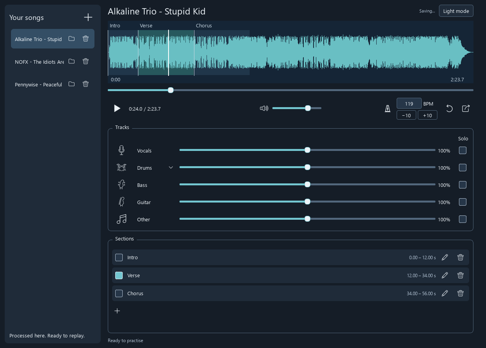

Track Splitter
I play drums in a band, and practising along with recordings is not always ideal. Sometimes the original drums get in the way of hearing what I’m playing. Other times, I want to listen closely to a particular drum part, and it would help to hear it separately from the rest of the song.
There are already apps for this, such as Moises, but I came across Demucs and decided to try building something around it.
I worked with ChatGPT on the interface and controls, testing the app and giving feedback as we went. Most of the changes came from using it: where things should sit, how to select and repeat a section, and how to adjust the mix without making the interface too cluttered.
Later, I found drumsep, which separates a drum track into individual parts, and added that too. Track Splitter can now separate a song into its main instruments, then split the drums further into kick, snare, cymbals and toms.
This is what it looks like now:

The app currently supports:
- Separate volume, mute and solo controls for each instrument and drum part.
- Named sections that can be selected for looping.
- BPM estimation and tempo changes while preserving pitch, including −10/+10 BPM buttons for practice.
- Saving songs, mixes and sections for later use.
- Exporting the current mix as a WAV file.
- Light and dark themes.
Audio processing runs locally, with models downloaded on first use.
After trying it on a few songs, I’m happy with how well the separation works, including the individual drum parts. The bass separation could still be a little cleaner, but overall it has been useful for practice.
For now, it is available for Windows. I may look into macOS and Linux at some point, but there are no plans for that yet.
The project is available on GitHub: